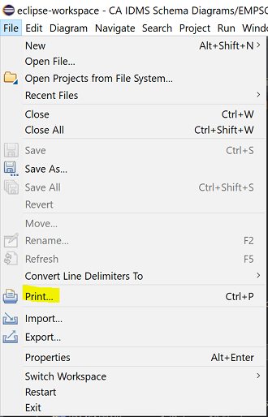

Printing Diagrams
You can print an opened diagram via the Print menu :

Beware that printing large diagrams can be challenging; products like PDF Creator can be of help here. Something that can
also work (for big diagrams) is copying the diagram to the clipboard and pasting it (as an
image) in your favorite image editor (Paint, Preview, ...); this way you have the option of slicing up your diagram and
printing it in parts.